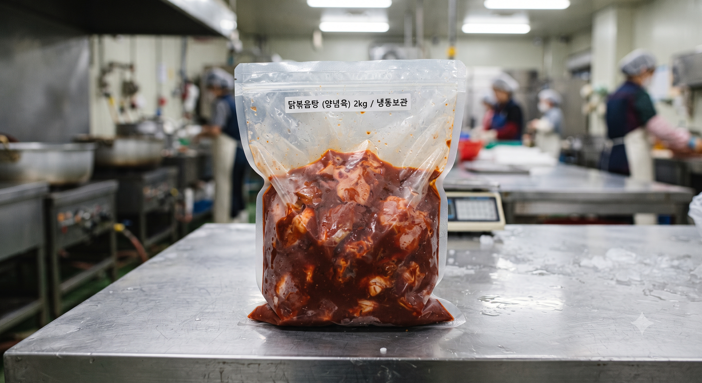
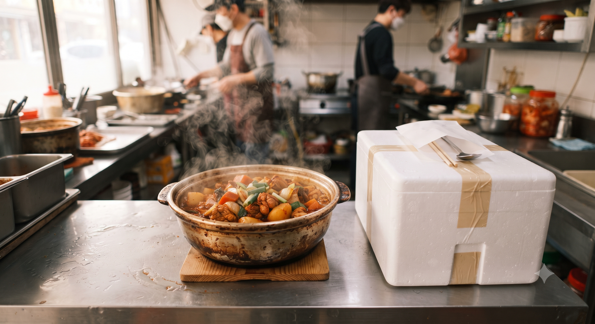
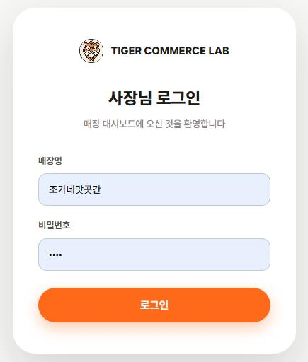
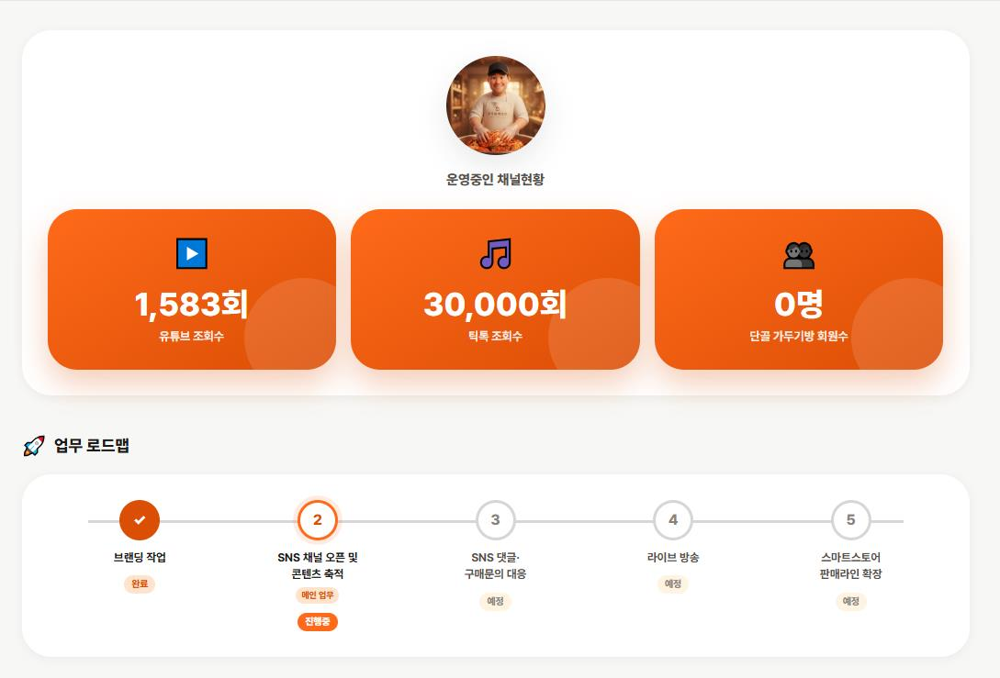
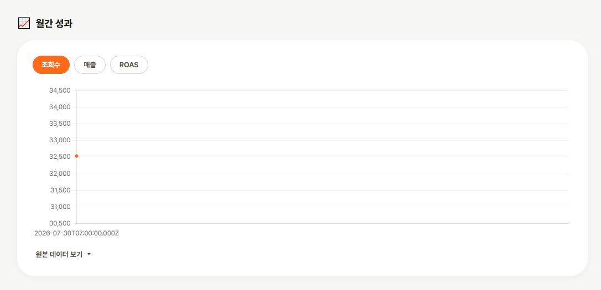
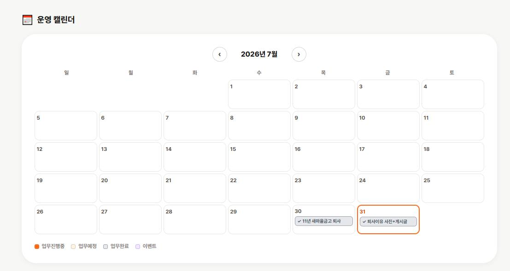
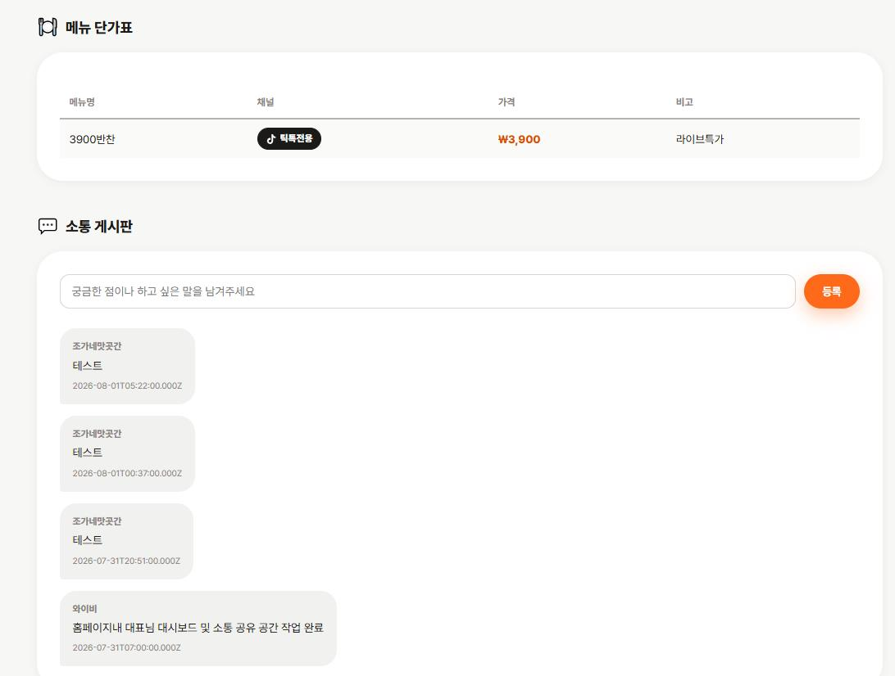

HERO

🙅♂️ 배달수수료 해방
🚚 전국 배달 시작
2km 반경을 넘어 전국이 내 매장 손님이 됩니다
WHY NOW
온라인 판매 시장은 한 해도 쉬지 않고 커지고 있고, 손님들은 여전히 매장의 '진짜' 맛을 찾습니다
온라인 식품 거래액 (조원)
자료: 통계청
코로나 이후 배달·택배 문화가 완전히 일상이 됐습니다
SNS·라이브커머스 시장 규모 (조원)
자료: 교보증권·한국인터넷진흥원
라이브커머스에서 가장 많이 팔리는 게 식품입니다(구매 상품 1위, 54.8%)출처: 서울시 조사
글보다 강한 영상의 힘
상세페이지
글과 사진으로 설명
글과 사진, 요즘은 잘 안 읽습니다. 지금은 영상의 시대입니다.
라이브커머스
실시간으로 직접 보여줌
SNS 발달로 라이브 방송이 익숙해진 시대, 사람들은 읽는 것보다 보는 것을 선호합니다. 라이브로 직접 보면 구매 욕구가 훨씬 커집니다.
압도적인 구매전환율과 재구매율
주 구매층 데이터
온라인스토어·SNS에서 식품을 주문하는 건 30~40대 여성이 80%대입니다. 아이들과 가족, 그리고 음식에 민감한 여성들이 주 고객층입니다
SNS로 모인 단골은 채널 자체에 애정이 있어서, 재주문이 상당히 높습니다
그래도, 사람들은 '진짜'를 찾습니다
소비자가 가정간편식(가공식품)을 구입하지 않는 이유
자료: 한국농촌경제연구원 2024년 가공식품 소비자태도조사
사장님 매장에서 직접 만든 그 맛, 온라인에서도 통합니다.
손님들은 이미 '진짜'를 찾고 있어요.


GROWTH
SNS 채널 + 네이버 스마트스토어 + 쿠팡, 3개가 연결되는 순간부터 매출 곡선이 달라집니다


SNS 채널
틱톡·유튜브·인스타·스레드로 잠재 고객에게 브랜드와 메뉴를 알립니다

네이버 스마트스토어
SNS로 모인 관심을 실제 구매로 전환하는 판매 채널입니다
국내 온라인 식품 카테고리 판매량 성장 지수 (2023=100, 업계 추정치)
쿠팡
일반 판매 입점으로 쿠팡을 이용하는 고객까지 판매 채널을 넓힙니다
국내 온라인 식품 카테고리 판매량 성장 지수 (2023=100, 업계 추정치)
HOW IT WORKS
메뉴 하나가 전국구 히트상품이 되기까지, 타이거커머스랩이 함께 갑니다
잘 팔리는 메뉴를 골라 이름, 스토리, 패키지까지 온라인에 맞게 다시 설계합니다
오프라인 메뉴를 그대로 옮기지 않습니다. 비슷한 소구점을 가진 메뉴가 온라인 시장에서 실제로 어떻게 반응하는지 분석해서, 온라인 전용/라이브 판매용/이벤트 한정판 등 목적별로 다르게 브랜딩합니다
브랜드의 얼굴이 될 인스타그램·유튜브 등 SNS 채널을 새로 만들고 세팅합니다
브랜드 톤에 맞춘 채널명·프로필·콘텐츠 방향을 먼저 설계한 뒤 개설합니다
구매 욕구를 자극하는 숏폼 콘텐츠를 기획·촬영·제작해 꾸준히 업로드합니다
메뉴의 맛·비주얼·스토리 중 가장 강한 소구점을 분석해, 3초 안에 시선을 붙잡는 후킹 구조로 기획합니다
콘텐츠로 모인 관심을 스마트스토어 판매로 실제 매출까지 연결합니다
구매 전환율에 최적화된 상세페이지·옵션 구조로 설계합니다
라이브커머스, 메타 광고 등으로 판매 채널을 계속 확장해 나갑니다
실시간 반응 데이터를 다음 콘텐츠 기획에 반영하는 순환 구조로 운영합니다
SERVICES
무료 점검부터 시작해, 매장 상황에 맞는 플랜으로 이어갑니다. 가격은 상담 시 안내드립니다.
먼저, 무료로
점검해드립니다
온라인 판매를 시작하기 전, 이 6가지만 맞아도 절반은 성공입니다
SNS·온라인스토어
판매 시작형
온라인 판매 구조를 처음부터 세팅하는 단기 집중 플랜
가격 상담 시 안내
SNS·온라인스토어
판매 확장형
시작형의 모든 업무 + 채널이 자리 잡고 매출이 안정화되는 장기 플랜
💡 채널이 의미 있게 성장하기까지는 보통 6개월~1년의 꾸준한 시간이 필요합니다
가격 상담 시 안내
LIVE DASHBOARD
주간, 월간, 목표 및
업무소통 대시보드 운영
계약 대표님과 실시간으로 업무 진행 상황을 확인하고 소통하는 전용 대시보드입니다. 매장 로그인 후 언제든 진행 현황을 직접 확인하실 수 있어요.

매장 전용 계정으로 로그인하면 아래 5가지 화면을 바로 확인하실 수 있어요




FOR YOU
FOUNDER
와이비 Tiger Commerce Lab 대표
외식업 현장에서 12년, 전국 40호점을 직접 만들어 온 브랜드 빌더입니다.
매장 하나하나의 강점을 찾아 온라인 판매 시스템으로 옮기는 일을 합니다.
LET'S TALK
아래 정보를 남겨주시면 빠르게 연락드리겠습니다
지금 시작한 사장님은 이미 전국에서 주문을 받고 있습니다
이럴 땐 카카오톡이 더 빨라요
INFLUENCER
내 가게처럼 진심으로 홍보해줄 인플루언서만 골랐습니다
지역·가격대별로 검증된 인플루언서를 바로 확인하실 수 있습니다. 직접 방문 촬영 원칙으로 만든 고퀄리티 콘텐츠, 지금 맛집감별사에서 확인해보세요.
맛집감별사에서 인플루언서 찾아보기